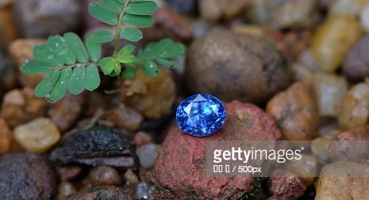

<!-- <div id="home" class="container-fluid">
  <div class="row">
<section class ="home">

   
 
<div class="carousel-caption">
  <div class="col-md-4">
<div class="card1">
<p>Ethical <br>
  Natural <br>
Fair Trade <br>
Certificate <br>
Provenance <br>
Your Ownership</p>
<h1>We prove all authentic</h1>
</div>
</div>
<div class="col-md-8">

  <div class="card2">
    <br>
  <h4>個々の宝石は、自然の特性や職人の技、倫理・社会的な事実の連鎖により、個性と価値が生まれています。<br><br>

 RURIは宝石の証明された属性や物語、オーナーシップを真正な事実として歴史に刻み、宝石の深い喜びを届けます。<br><br>
  
 宝石の価値を正しく記憶し証明するため、ブロックチェーンの技術が使われています。 </h4>  
    <br>
  </div>
  
</div>
</div>
</section>
</div>
</div> -->

<div id="home" class="container-fluid ">
  
    <div class="row h-100">
      <div class="col-sm-6 my-auto">
       <div class="card1">
        <p>Ethical <br>
          Natural <br>
        Fair Trade <br>
        Certificate <br>
        Provenance <br>
        Your Ownership</p>
        <h2>WE  PROVE  ALL  AUTHENTIC</h2>
    </div>
      </div>

      <div class="col-sm-6 my-auto">
        <div class="card2">
  <h5><br>個々の宝石は、自然の特性や職人の<br>
    技、倫理・社会的な事実の連鎖によ<br>
    り、個性と価値が生まれています。<br><br>

 RURIは宝石の証明された属性や物語、<br>
 オーナーシップを真正な事実として <br>
 歴史に刻み、宝石の深い喜びを届け<br>
 ます。<br><br> </h5>
  
 <h6>宝石の価値を正しく記憶し証明するため、ブロック<br>
   チェーンの技術が使われています。<br><br> </h6> 
      
    </div>
   </div>
    </div>
 
  </div>


